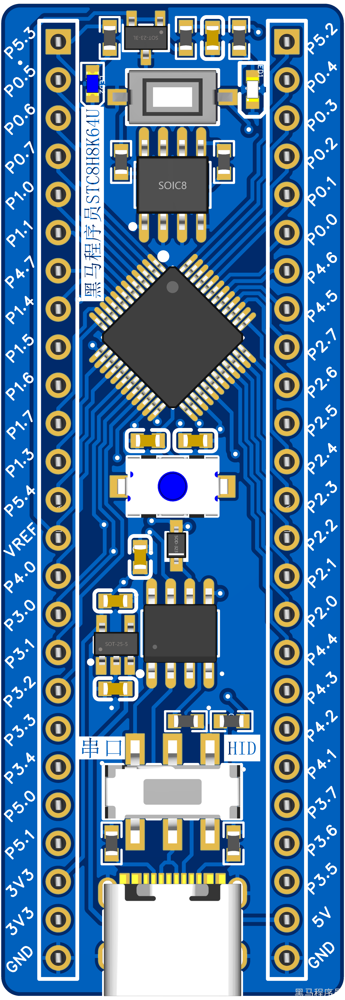
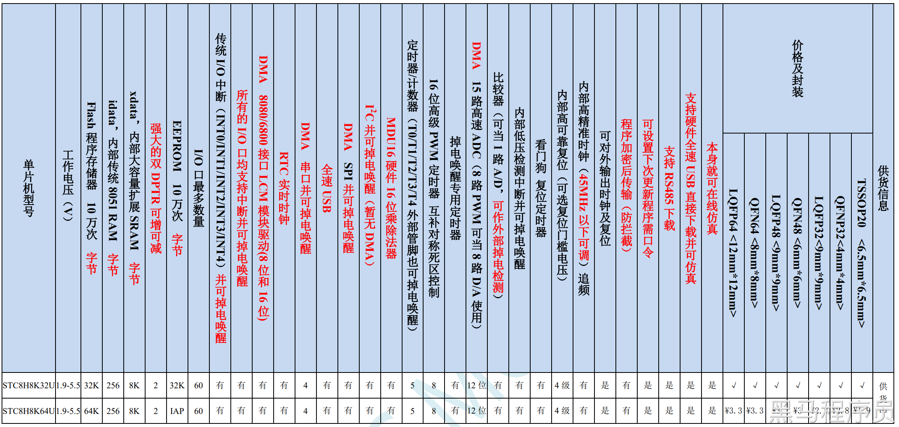
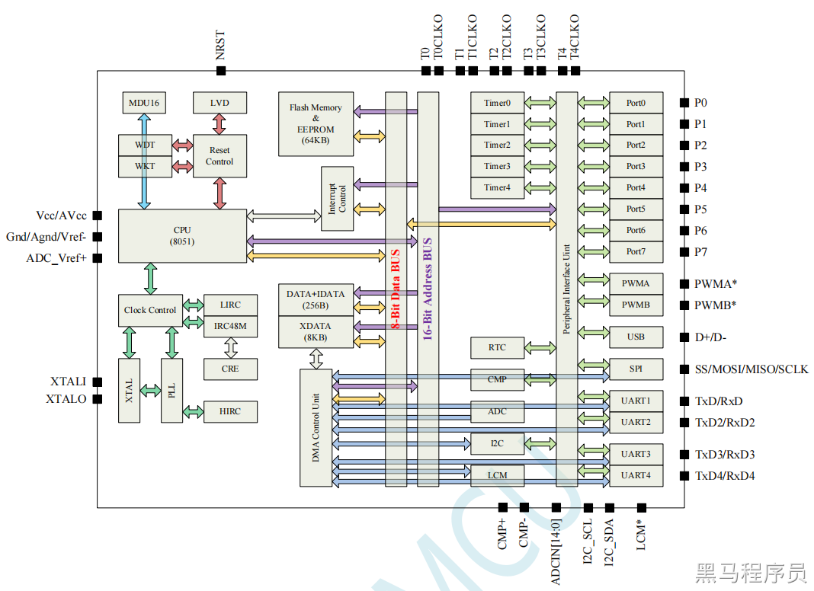

<!DOCTYPE lake>
<p data-lake-id="u93c94570" id="u93c94570"></p><p data-lake-id="u6c40e8e8" id="u6c40e8e8"><span data-lake-id="u7e451167" id="u7e451167">为黑马程序员自主设计的最小开发板，包含了最小系统，以及部分外设，所有引脚都已经引出，方便后续扩展使用。</span></p><p data-lake-id="ue21103c9" id="ue21103c9"><span data-lake-id="u2f3aab40" id="u2f3aab40">采用的是STC8H8K64U芯片</span></p><a class="yuque-card-link" href="https://www.yuque.com/attachments/yuque/0/2024/pdf/27903758/1722391978165-7ebf60fb-601b-4991-ac1e-bb19d6fb82d8.pdf">localdoc：stc8h.pdf</a><h2 data-lake-id="tRChE" id="tRChE"><span data-lake-id="ub1c95f82" id="ub1c95f82">功能支持</span></h2><ul list="u15fd7e0b"><li data-lake-id="u1f2e8758" fid="u7daa3177" id="u1f2e8758"><span data-lake-id="u96cc2d06" id="u96cc2d06">串口烧录</span></li><li data-lake-id="uf11d55f3" fid="u7daa3177" id="uf11d55f3"><span data-lake-id="u93c364c7" id="u93c364c7">HID烧录</span></li><li data-lake-id="u9cf7bc77" fid="u7daa3177" id="u9cf7bc77"><span data-lake-id="u78e9f8ef" id="u78e9f8ef">基准电压</span></li><li data-lake-id="ua64144f2" fid="u7daa3177" id="ua64144f2"><span data-lake-id="u520e4b11" id="u520e4b11">按键操作</span></li><li data-lake-id="ue080cec0" fid="u7daa3177" id="ue080cec0"><span data-lake-id="uf5c70980" id="uf5c70980">LED指示</span></li><li data-lake-id="u2a3a08d5" fid="u7daa3177" id="u2a3a08d5"><span data-lake-id="ue8d85082" id="ue8d85082">可编程LED灯</span></li><li data-lake-id="u2f4008fc" fid="u7daa3177" id="u2f4008fc"><span data-lake-id="ud258fb44" id="ud258fb44">外部存储拓展</span></li><li data-lake-id="u4c5d32c3" fid="u7daa3177" id="u4c5d32c3"><span data-lake-id="u46848dcc" id="u46848dcc">全部引脚扩展</span></li></ul><h2 data-lake-id="GLX2V" id="GLX2V"><span data-lake-id="uc46fe28c" id="uc46fe28c">STC8原理图</span></h2><p data-lake-id="u56fd1bb6" id="u56fd1bb6"></p><h2 data-lake-id="S2gH1" id="S2gH1"><span data-lake-id="ufcabc9ec" id="ufcabc9ec">STC系列产品</span></h2><p data-lake-id="ubd709c7e" id="ubd709c7e"><a data-lake-id="u422d01ce" href="https://stcmcu.com/" id="u422d01ce" rel="noopener noreferrer" target="_blank"><span data-lake-id="u739572a8" id="u739572a8">STC官方网站</span></a></p><p data-lake-id="uf379c90a" id="uf379c90a"><a class="yuque-card-link" href="https://www.stcaimcu.com/" rel="noopener noreferrer" target="_blank">bookmarkInline：bookmarkInline</a></p><h3 data-lake-id="Oy7T8" id="Oy7T8"><span data-lake-id="uffd10562" id="uffd10562">STC8系列</span></h3><ul list="u275fdae6"><li data-lake-id="u0897306c" fid="u54843a1e" id="u0897306c"><span data-lake-id="u0cd180ad" id="u0cd180ad">STC8A: 字母“A”代表 ADC，是 STC 12 位 ADC 的起航产品</span></li><li data-lake-id="ua388b72d" fid="u54843a1e" id="ua388b72d"><span data-lake-id="u41fccd83" id="u41fccd83">STC8F: 无ADC、PWM 和PCA 功能，现 STC8F 的改版芯片与原始的 STC8F 管脚完全兼容，但对STC8F内部设计进行了优化和更新，用户需要修改程序，所以命名为 STC8C</span></li><li data-lake-id="u5f2996d4" fid="u54843a1e" id="u5f2996d4"><span data-lake-id="udb8a2286" id="udb8a2286">STC8C: 字母“C”代表改版，是 STC8F 的改版芯片</span></li><li data-lake-id="u355c0d73" fid="u54843a1e" id="u355c0d73"><span data-lake-id="u81550306" id="u81550306">STC8G: 字母“G”最初是芯片生产时打错字了，后来将错就错，定义 G 系列为“GOOD”系列，STC8G 系列简单易学</span></li><li data-lake-id="ub2320769" fid="u54843a1e" id="ub2320769"><span data-lake-id="uf361e970" id="uf361e970">STC8H: 字母“H”取自“高”的英文单词“High”的首字母，“高”表示“16 位高级 PWM”</span></li></ul><p data-lake-id="ua84d48d5" id="ua84d48d5"><span data-lake-id="u9e4f2292" id="u9e4f2292">目前主流的位STC8H，其他都属于过去系列</span></p><h3 data-lake-id="WOhNe" id="WOhNe"><span data-lake-id="uc12d6992" id="uc12d6992">STC32系列</span></h3><ul list="u99120678"><li data-lake-id="u8fea4760" fid="ue73b603b" id="u8fea4760"><span data-lake-id="ud658c179" id="ud658c179">STC32G: 32位8051单片机，2022年推出。</span></li></ul><p data-lake-id="u7f03369d" id="u7f03369d"><span data-lake-id="u53c2ff33" id="u53c2ff33">为新产品，32位，更高效。由于推出时间不久，通常对于应用到产品中会保留观望态度。但是，很快就会普及。对于开发而言，和STC8系列很多是类似的，会STC8，上手STC32是很简单的。</span></p><h2 data-lake-id="n9gAe" id="n9gAe"><span data-lake-id="u2408efc5" id="u2408efc5">STC8H8K64U</span></h2><p data-lake-id="ua6114980" id="ua6114980"></p><p data-lake-id="ud2d10563" id="ud2d10563"><br/></p><h3 data-lake-id="E9PE6" id="E9PE6"><span data-lake-id="u411419cf" id="u411419cf">STC8H8K64U功能框图</span></h3><p data-lake-id="ua414bc25" id="ua414bc25"></p><p data-lake-id="u184000f0" id="u184000f0"><br/></p><p data-lake-id="u55cafa3d" id="u55cafa3d"><span data-lake-id="u8cbdc7b7" id="u8cbdc7b7">内核：</span></p><ul list="u7de417ed"><li data-lake-id="u54b92f39" fid="uc2760080" id="u54b92f39"><span data-lake-id="u009eaa99" id="u009eaa99">超高速 8051 内核 (1T)，比传统 8051 约快 12 倍以上</span></li><li data-lake-id="u5f642435" fid="uc2760080" id="u5f642435"><span data-lake-id="u04f33173" id="u04f33173">指令代码完全兼容传统 8051</span></li><li data-lake-id="u0cf0c2ad" fid="uc2760080" id="u0cf0c2ad"><span data-lake-id="u8d980a19" id="u8d980a19">22 个中断源，4 级中断优先级</span></li><li data-lake-id="u4e8efd8a" fid="uc2760080" id="u4e8efd8a"><span data-lake-id="uf22f5765" id="uf22f5765">支持在线仿真</span></li></ul><p data-lake-id="u9177b7e7" id="u9177b7e7"><span data-lake-id="ue6e78951" id="ue6e78951">工作电压：</span></p><ul list="uc8f19401"><li data-lake-id="u66ba4c15" fid="ud67fa4d7" id="u66ba4c15"><span data-lake-id="u1bbb7491" id="u1bbb7491">1.9V~5.5V</span></li></ul><p data-lake-id="u08569901" id="u08569901"><span data-lake-id="uba1c1b89" id="uba1c1b89">工作温度：</span></p><ul list="u10d46255"><li data-lake-id="u389fcc6c" fid="ue412b0fb" id="u389fcc6c"><span data-lake-id="udb125627" id="udb125627">-40C~85C (芯片为-40C~125C制程，超温度范围应用请参考电气特性章节说明)</span></li></ul><p data-lake-id="u29a1bd7f" id="u29a1bd7f"><span data-lake-id="ua545e3ca" id="ua545e3ca">Flash存储器:</span></p><ul list="uc7c217a0"><li data-lake-id="u588b0924" fid="u17a15488" id="u588b0924"><span data-lake-id="u0a9e7772" id="u0a9e7772">最大 64K 字节 FLASH 程序存储器 (ROM) ，用于存储用户代码</span></li><li data-lake-id="uae648d36" fid="u17a15488" id="uae648d36"><span data-lake-id="uc8441da2" id="uc8441da2">支持用户配置 EEPROM 大小，512 字节单页擦除，擦写次数可达 10 万次以上</span></li><li data-lake-id="u438348bd" fid="u17a15488" id="u438348bd"><span data-lake-id="u37492ec1" id="u37492ec1">支持在系统编程方式 (ISP) 更新用户应用程序，无需专用编程器</span></li><li data-lake-id="u3b96ea7d" fid="u17a15488" id="u3b96ea7d"><span data-lake-id="u437131c4" id="u437131c4">支持单芯片仿真，无需专用仿真器，理论断点个数无限制</span></li></ul><p data-lake-id="u68c15cbe" id="u68c15cbe"><span data-lake-id="u37d4dc08" id="u37d4dc08">SRAM：</span></p><ul list="u0b097826"><li data-lake-id="ufb82f013" fid="u5b98b356" id="ufb82f013"><span data-lake-id="u5e58f94a" id="u5e58f94a">128 字节内部直接访问 RAM (DATA，C 语言程序中使用 data 关键字进行声明)</span></li><li data-lake-id="uf0f5573e" fid="u5b98b356" id="uf0f5573e"><span data-lake-id="uee222bef" id="uee222bef">128 字节内部间接访问 RAM (IDATA，C 语言程序中使用 idata 关键字进行声明)</span></li><li data-lake-id="u9d3f99f5" fid="u5b98b356" id="u9d3f99f5"><span data-lake-id="ubea057ad" id="ubea057ad">8192 字节内部扩展 RAM(内部 XDATA，C 语言程序中使用 xdata 关键字进行声明)</span></li><li data-lake-id="ue1364b62" fid="u5b98b356" id="ue1364b62"><span data-lake-id="ua9876746" id="ua9876746">1280 字节 USB 数据 RAM</span></li></ul><p data-lake-id="u5a617c0d" id="u5a617c0d"><span data-lake-id="u8499742c" id="u8499742c">时钟控制：</span></p><ul list="uc95e4140"><li data-lake-id="u703f334a" fid="u2a99b793" id="u703f334a"><span data-lake-id="u418074f4" id="u418074f4">内部高精度IRC (4MHZ45MH，ISP 编程时选择或手动输入，还可以用户软件分频到较低的频率工作如 100KHz)</span></li></ul><ul data-lake-indent="1" list="uc95e4140"><li data-lake-id="ubcaaa832" fid="u2a99b793" id="ubcaaa832"><span data-lake-id="ud3c7e0c1" id="ud3c7e0c1">误差士0.3% (常温下 25C )中</span></li><li data-lake-id="uf37d95b2" fid="u2a99b793" id="uf37d95b2"><span data-lake-id="ub3b2283e" id="ub3b2283e">-1.35%~+1.30%温漂(全温度范围，-40C~85C)</span></li><li data-lake-id="u6ee14b55" fid="u2a99b793" id="u6ee14b55"><span data-lake-id="u242f769d" id="u242f769d">-0.76%~+0.98%温漂(温度范围，-20C~65°C)</span></li></ul><ul list="uc95e4140" start="2"><li data-lake-id="udb75940d" fid="u2a99b793" id="udb75940d"><span data-lake-id="u06e9ae32" id="u06e9ae32">内部 32KHz 低速 IRC (误差较大)</span></li><li data-lake-id="u898a7540" fid="u2a99b793" id="u898a7540"><span data-lake-id="uea07fc2e" id="uea07fc2e">外部晶振(4MHz~45MHZ) 和外部时钟</span></li></ul><p data-lake-id="u78f47623" id="u78f47623"><span data-lake-id="u403f22ec" id="u403f22ec">用户可自由选择上面的 3 种时钟源</span></p><p data-lake-id="ucebc60b6" id="ucebc60b6"><span data-lake-id="uab0b28ec" id="uab0b28ec">复位:</span></p><ul list="u18f19a18"><li data-lake-id="u942b739b" fid="u46148c7a" id="u942b739b"><span data-lake-id="u01585ac8" id="u01585ac8">硬件复位</span></li></ul><ul data-lake-indent="1" list="u18f19a18"><li data-lake-id="u0286764b" fid="u46148c7a" id="u0286764b"><span data-lake-id="ufbba9ae7" id="ufbba9ae7">上电复位，实测电压值为 1.69V~1.82V。 (在芯片未使能低压复位功能时有效)9上电复位电压由一个上限电压和一个下限电压组成的电压范围，当工作电压从 5V/3.3V 向下掉到上电复位的下限门槛电压时，芯片处于复位状态，当电压从 OV 上升到上电复位的上限门电压时芯片解除复位状态。</span></li><li data-lake-id="ub6f83808" fid="u46148c7a" id="ub6f83808"><span data-lake-id="ud23748e9" id="ud23748e9">复位脚复位，出厂时 P5.4 默认为 IO 口，ISP 下载时可将 P5.4管脚设置为复位脚(注意: 当设置 P5.4安管脚为复位脚时，复位电平为低由平)</span></li><li data-lake-id="u1a0d120c" fid="u46148c7a" id="u1a0d120c"><span data-lake-id="u66c714ee" id="u66c714ee">看门狗溢出复位</span></li><li data-lake-id="u0e7a632e" fid="u46148c7a" id="u0e7a632e"><span data-lake-id="u46922d0c" id="u46922d0c">低压检测复位，提供 4 级低压检测电压: 1.9V、2.3V、2.8V、3.7V。每级低乐检测电压都是由一个上限电乐和一个下限电乐组成的电压范用，当工作电压从 5V/3.3V 向下掉到低压检测的下限门槛电压时，低压检测生效，当电压从 0V 上升到低压检测的上限门槛电压时，低压检测生效。</span></li></ul><ul list="u18f19a18" start="2"><li data-lake-id="uf6200277" fid="u46148c7a" id="uf6200277"><span data-lake-id="u070a67ed" id="u070a67ed">软件复位</span></li></ul><ul data-lake-indent="1" list="u18f19a18"><li data-lake-id="ubb07031b" fid="u6434d841" id="ubb07031b"><span data-lake-id="u0e78acba" id="u0e78acba">软件方式写复位触发寄存器</span></li></ul><p data-lake-id="u7103e713" id="u7103e713"><span data-lake-id="udcaad010" id="udcaad010">中断：</span></p><ul list="uc3fde637"><li data-lake-id="uf473c93e" fid="ub2cfc0f5" id="uf473c93e"><span data-lake-id="u015b5e22" id="u015b5e22">提供 22 个中断源: INTO (支持上升沿和下降沿中断)、INT1 (支持上升沿和下降沿中断)、INT2(只支持下降沿中断)、INT3(只支持下降沿中断) 、INT4(只支持下降沿中断) 、定时器 0、定时器 1、定时器2、定时器3、定时器4、串口1、串口2、串口3、串口4、ADC 模数转换、LVD 低压检测、SPI、T2C比较器、PWMA、PWMB、USB</span></li><li data-lake-id="ue4914552" fid="ub2cfc0f5" id="ue4914552"><span data-lake-id="u7fcd77c0" id="u7fcd77c0">提供 4 级中断优先级</span></li><li data-lake-id="u8e8aa6bf" fid="ub2cfc0f5" id="u8e8aa6bf"><span data-lake-id="ub8a15dfb" id="ub8a15dfb">时钟停振模式下可以唤醒的中断:INTO(P3.2)、INT1(P3.3)、INT2P3.)、INT3(P3.7)、INT4(P3.0)、TO(P3.4)、T1(P3.5)、T2(P1.2)、T3(P0.4)、 T4(P0.6)、RXD(P3.0/P3.6/P1.6/P4.3)、RXD2(P1.0/P4.6)、RXD3(P0.0/P5.0)、RXD4(P0.2/P5.2)、I2C SDA(P1.4/P2.4/P3.3)以及比较器中断、低压检测中断、掉电唤醒定时器唤醒。</span></li></ul><p data-lake-id="u0c1f6ebf" id="u0c1f6ebf"><span data-lake-id="ube5e492e" id="ube5e492e">数字外设：</span></p><ul list="ue2830547"><li data-lake-id="uabe16d67" fid="ubb7dea72" id="uabe16d67"><span data-lake-id="u7c20e646" id="u7c20e646">5个16 位定时器: 定时器0、定时器 1、定时器 2、定时器 3、定时器 4，其中定时器 0的模式3 具有NMI(不可屏蔽中断) 功能，定时器 0 和定时器 1 的模式 0为 16 位自动重载模式4 人高速串口:串口1、串口2、串门3、串口4，波特率时钟源最快可为FOSC/48路/2 组高级 PWM，可实现带死区的控制信号，并支持外部异常检测功能，另外还支持 16 位定时器、8个外部中断、8 路外部捕获测量脉宽等功能</span></li><li data-lake-id="uc8609d0e" fid="ubb7dea72" id="uc8609d0e"><span data-lake-id="uc1d35bdd" id="uc1d35bdd">SPI: 支持主机模式和从机模式以及主机/从机自动切换I2C:支持主机模式和从机模式</span></li><li data-lake-id="u78d2008a" fid="ubb7dea72" id="u78d2008a"><span data-lake-id="ucc841a7f" id="ucc841a7f">MDU16: 硬件 16 位乘除法器 (支持 32 位除以 16 位、16 位除以 16 位、16 位乘 16位、数据移位以及数据规格化等运算)</span></li><li data-lake-id="u18d13621" fid="ubb7dea72" id="u18d13621"><span data-lake-id="u87ed2ea2" id="u87ed2ea2">USB: USB2.0/USB1.1 兼容全速 USB，6 个双向端点，支持 4 种端点传输模式(控制传输、中断传输、批量传输和同步传输) ，每个端点拥有 64 字节的缓冲区</span></li><li data-lake-id="uf4bd4755" fid="ubb7dea72" id="uf4bd4755"><span data-lake-id="u9d9bf908" id="u9d9bf908">I/0 口中断:所有的 I/0 均支持中断，每组 I/0 中断有独立的中断入口地址，所有的I/0 中断可支持 4种中断模式:高电平中断、低电平中断、上升沿中断、下降沿中断。提供 4 级中断优先级并支持掉电唤醒功能。(注: A 版芯片无此功能)</span></li><li data-lake-id="ufced0ce2" fid="ubb7dea72" id="ufced0ce2"><span data-lake-id="u3c977f57" id="u3c977f57">DMA :支持 Memory-To-Memory 、 SPI 、 UART1TX/UARTIRX 、 UART2TX/UART2RXUART3TX/UART3RX、UART4TX/UART4RX、ADC (自动计算多次 ADC 结果的平均值)</span></li></ul><p data-lake-id="udedcece6" id="udedcece6"><span data-lake-id="uf3e29069" id="uf3e29069">模拟外设：</span></p><ul list="u2c85683c"><li data-lake-id="u98650121" fid="uf97fcdd0" id="u98650121"><span data-lake-id="uc788f4c9" id="uc788f4c9">超高速 ADC，支持 12 位高精度 15 通道(通道0通道 14)的模数转换，速度最快能达到 800K (每秒进行 80 万次 ADC 转换)</span></li><li data-lake-id="u36b5776b" fid="uf97fcdd0" id="u36b5776b"><span data-lake-id="u0e34301f" id="u0e34301f">ADC 的通道 15 用于测试内部 1.19V 参考信号源(芯片在出厂时，内部参考信号源已调整为 1.19V)</span></li><li data-lake-id="u6002285f" fid="uf97fcdd0" id="u6002285f"><span data-lake-id="ud4f0e0eb" id="ud4f0e0eb">比较器，一组比较器(A 版芯片: 比较器的正端可选择 CMP+和所有的 ADC 输入端口，比较器的负端可选择 CMP和内部 1.19V 的参考源: B 版芯片:比较器的正端可选择 CMP+、CMP+ 2、CMP+ 3 和所有的ADC 输入端口，比较器的负端可选择 CMP-端口和内部 1.19V 的参考源。所以比较器可当作多路比较器进行分时复用)</span></li><li data-lake-id="u6304ead1" fid="uf97fcdd0" id="u6304ead1"><span data-lake-id="u49b84f9f" id="u49b84f9f">DAC: 8 路高级 PWM 定时器可当8路DAC 使用</span></li></ul><p data-lake-id="u9a61c8ba" id="u9a61c8ba"><span data-lake-id="u3cb000aa" id="u3cb000aa">GPIO:</span></p><ul list="u73b598d0"><li data-lake-id="uda9b7a90" fid="ua864b876" id="uda9b7a90"><span data-lake-id="u6d8a464b" id="u6d8a464b">最多可达 60 个 GPIO: P0.0P07、P1.0 P1,7 (无P1.2) 、P2.0 P2,7、P3.0 P3,7、P4.0 P47、P5.0P5.4.</span></li><li data-lake-id="ue617e8dd" fid="ua864b876" id="ue617e8dd"><span data-lake-id="u081fe0f3" id="u081fe0f3">P6.0~P6.7、P7.0~P7.7所有的 GPIO 均支持如下 4 种模式: 准双向口模式、强推挽输出模式、开漏输出模式、高阻输入模式</span></li><li data-lake-id="udb511135" fid="ua864b876" id="udb511135"><span data-lake-id="u93b509e0" id="u93b509e0">除 P3.0 和 P3.1 外，其余所有 IO 口上电后的状态均为高阻输入状态，用户在使用 IO口时必须先设置IO口模式。另外每个 IO口均可独立使能内部 4K 上拉电阻</span></li></ul>